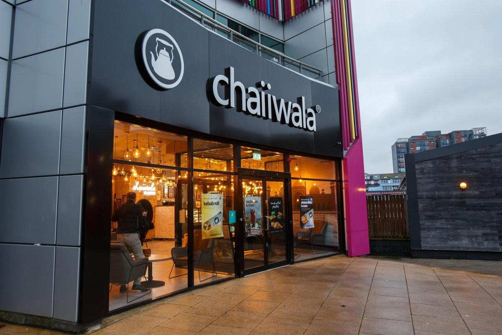
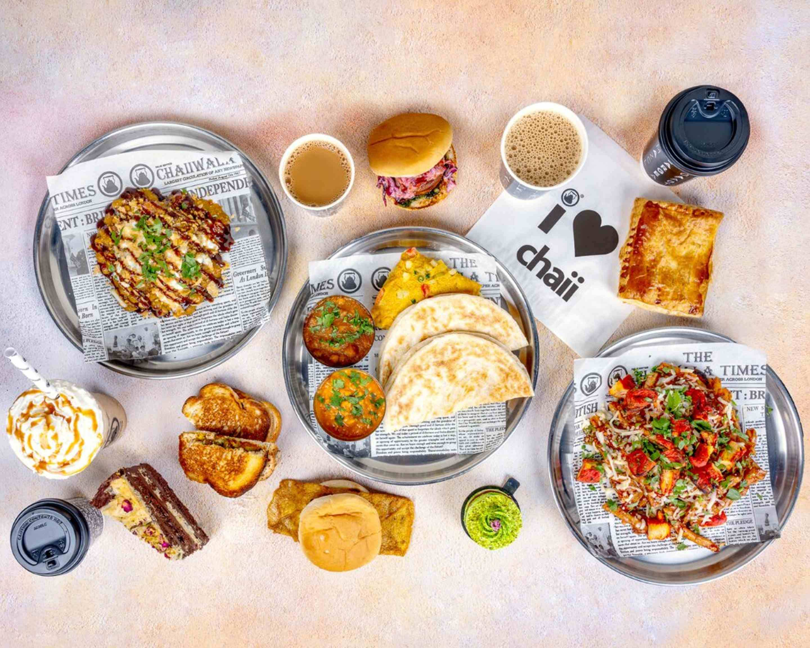
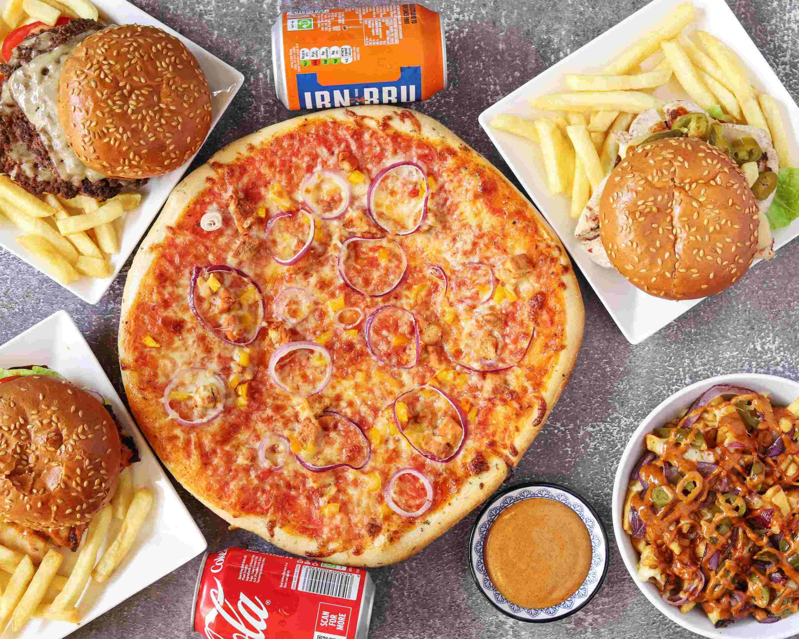
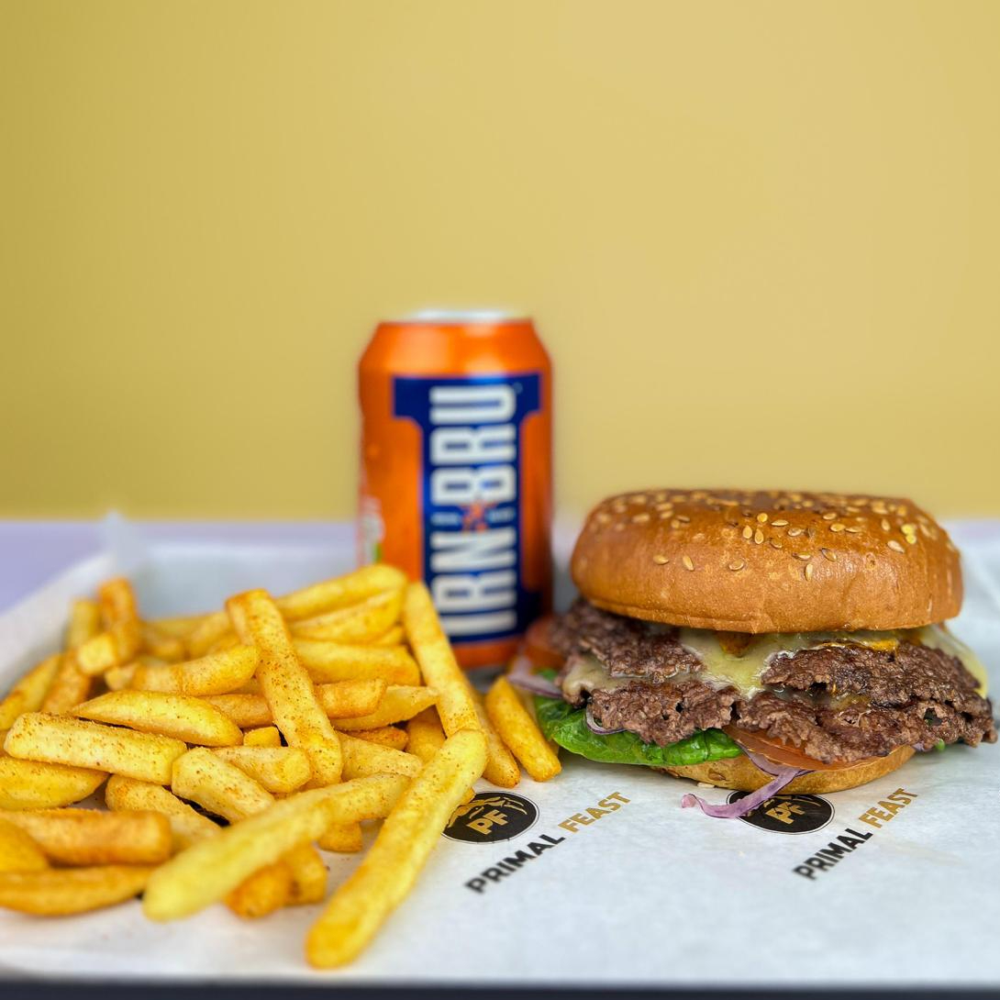

Some of my personal favourite food spots around my city.
A tea spot popular amongst much of the south-asian community, known for the pretty ambience and relaxed atmosphere.
 Smash-burgers are taking off in Glasgow, and this is one of my go-to spots. I part-time here, and a friend owns the business, so I might be slightly biased, but I love burgers.
 